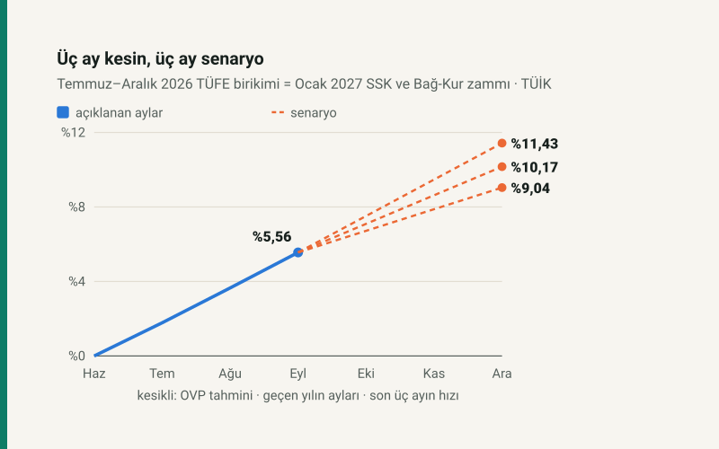

Kısa cevap
Ocak 2027'de SSK ve Bağ-Kur aylıklarına yapılacak zam, Temmuz–Aralık 2026 enflasyonuna eşit (5510 sayılı Kanun m.55). Altı ayın üçü açıklandı: Temmuz %1,78, Ağustos %1,84, Eylül %1,84; birikim %5,56. Bu kısım kesin; kalan üç ayda fiyatlar düşmedikçe zam bunun altına inmez.
Kalan üç ay için TÜİK serisinden ve resmî tahminden kurulan üç senaryo zammı %9,04 ile %11,43 arasına koyuyor. Kesin oran 4 Ocak 2027'te, Aralık TÜFE'siyle belli olacak.
Kesin olan: üç ay
Zam, aylık oranların toplamı değil bileşiği: her ay bir öncekinin üstüne eklenir. Temmuz–Eylül'ün bileşiği %5,56.
| Ay | Aylık | Birikim |
|---|---|---|
| Temmuz 2026 | %1,78 | %1,78 |
| Ağustos 2026 | %1,84 | %3,65 |
| Eylül 2026 | %1,84 | %5,56 |
Kalan üç ay için üç senaryo
Bunlar tahmin değil, varsayımı açık hesaplar. İkisi doğrudan TÜİK serisinden: son üç ayın hızının sürmesi ve geçen yılın aynı aylarının (%2,55, %0,87, %0,89) tekrarlanması. Üçüncüsü hükümetin Orta Vadeli Program'daki 2026 yıl sonu tahmini (%28,40): ilk yarının %17,75'lik birikimi düşülünce ikinci yarıya ne kaldığını gösterir.
| Senaryo | Ekim–Aralık aylık ortalama | Ocak zammı |
|---|---|---|
| Son üç ayın hızı sürerse | %1,82 | %11,43 |
| Geçen yılın aynı ayları | %1,43 | %10,17 |
| OVP tahmini tutarsa | %1,09 | %9,04 |
OVP senaryosunun Ekim–Aralık için ima ettiği aylık hız (%1,09), son üç ayın hızının (%1,82) epey altında. Yıl sonu tahmini tutacaksa son çeyrekte fiyat artışının belirgin biçimde yavaşlaması gerekiyor.
Her yarım puan ne değiştirir?
Kalan üç ayın aylık ortalaması yarım puan değişince zam yaklaşık 1,64 puan değişiyor.
| Ekim–Aralık her ay | Ocak zammı |
|---|---|
| %1,00 | %8,76 |
| %1,50 | %10,38 |
| %2,00 | %12,02 |
| %2,50 | %13,68 |
Aylığınıza etkisi
Zam bugünkü aylığın üstüne ilan edilen oranla eklenir. Örnek aylıklarla:
| Bugünkü aylık | Son üç ayın hızı sürerse | Geçen yılın aynı ayları | OVP tahmini tutarsa |
|---|---|---|---|
| 20.000 TL | 22.286 TL | 22.034 TL | 21.808 TL |
| 30.000 TL | 33.429 TL | 33.051 TL | 32.712 TL |
| 40.000 TL | 44.572 TL | 44.068 TL | 43.616 TL |
En düşük aylığı alanlar için tablo farklı: taban tutar kanunla belirlenir ve Ocak zammı tabandakine kendiliğinden yansımaz. Ayrıntısı Ocak 2027 zammı en düşük emekli aylığına yansır mı? yazısında.
Ne zaman belli olacak?
TÜİK kalan ayları şu günlerde açıklayacak: Ekim 2026 verisi 3 Kasım 2026, Kasım 2026 verisi 3 Aralık 2026, Aralık 2026 verisi 4 Ocak 2027. Son açıklamayla zam kesinleşir; sitedeki emekli zammı aracı her açıklamanın ertesi günü kendiliğinden güncellenir.
Varsayımlar ve sınırlar
- Kural 5510 sayılı Kanun m.55: SSK ve Bağ-Kur aylıkları Ocak'ta önceki yılın Temmuz–Aralık TÜFE değişimi kadar artar. Kanunla verilen ek artış (refah payı) ve en düşük aylık tabanı bu hesabın dışında; ikisi de ayrı kanun ister.
- Altı aylık değişim aylık oranların bileşiğidir. Seri aylık oranları iki ondalıkla tutar; TÜİK endeks düzeyinden hesapladığı için resmî oran yüzde birlik basamakta farklı çıkabilir.
- Senaryolar tahmin değildir. "Son üç ayın hızı" Temmuz–Eylül'ün aylık ortalamasını, "geçen yılın ayları" Ekim–Aralık 2025'in oranlarını, "OVP tahmini" hükümetin 2026 yıl sonu tahminini kullanır.
- 4/c kapsamındaki memur emeklileri bu kurala değil memur maaş artışına tabidir: Ocak 2027 memur zammı.
Kaynaklar
- 5510 sayılı Kanun m.55 (aylıkların artırılması)
- Aylık TÜFE: TÜİK, TCMB Tüketici Fiyatları tablosu üzerinden; sitenin serisi her gece güncellenir
- Orta Vadeli Program (2027–2029), Strateji ve Bütçe Başkanlığı; Resmî Gazete 6 Eylül 2026: 2026 yıl sonu TÜFE tahmini %28,4
Sık sorulan sorular
Ocak 2027 emekli zammı ne zaman belli olur?
Aralık 2026 TÜFE'sinin açıklandığı 4 Ocak 2027'de. Zam Temmuz–Aralık enflasyonuna eşit olduğu için ayrı bir karar beklenmez.
SSK ve Bağ-Kur emeklisi aynı zammı mı alır?
Evet. İkisinin aylığı da 5510 sayılı Kanun'un 55. maddesine göre aynı altı aylık enflasyon kadar artar.
Zam en düşük emekli aylığına yansır mı?
Kendiliğinden yansımaz; taban tutar kanunla belirlenir. Ayrıntısı en düşük emekli aylığı yazısında.